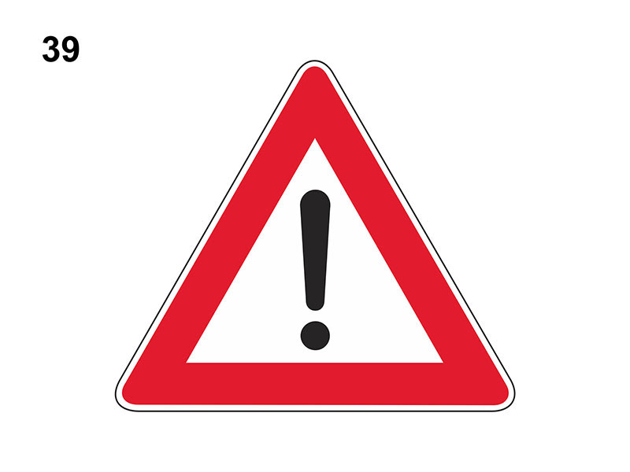

Altri pericoli

E' un segnale di pericolo che preannuncia (di norma a 150 metri) un pericolo generico, diverso da quelli indicati dagli altri segnali di pericolo.
Sotto al segnale è obbligatorio un pannello integrativo che specifica il tipo di pericolo.
Esempio:
Può essere usato senza pannelli integrativi per indicare un pericolo generico in caso di emergenza.
Indica di procedere con prudenza.
Sotto al segnale è obbligatorio un pannello integrativo che specifica il tipo di pericolo.
Esempio:
- 'ATTRAVERSAMENTO BINARI'
- 'GHIACCIO'
- 'SGOMBRANEVE IN AZIONE'
- 'MEZZI DI LAVORO IN AZIONE'
- etc.
Può essere usato senza pannelli integrativi per indicare un pericolo generico in caso di emergenza.
Indica di procedere con prudenza.